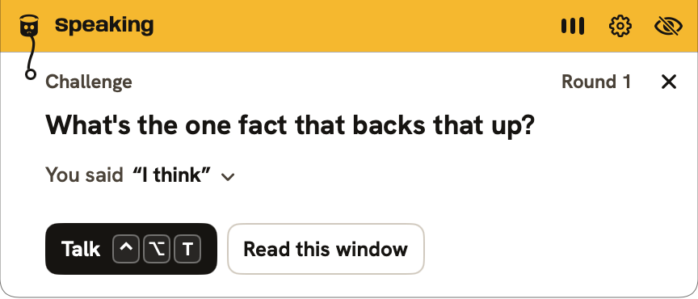
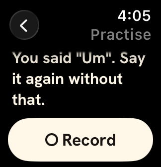

TugTalk · speaking practice for Apple Watch
Practise on your watch. Your assistant remembers.
Answer a question out loud on your Apple Watch. TugTalk counts your fillers, unsure words and restarts.
Muse, Meta's assistant, reads every saved answer on your phone and laptop.
Tug, your sparring partner
Two fillers. Want another go?
Example answer
Um, so I think the main point is basically that we should ship the smaller version first.
- 2 fillers
- 1 unsure word
How it works
About 15 seconds from Stop to a saved session.
-
Step 1 of 4
Record on the watch
Tap Record, answer, tap Stop.
-
Um, so I think the main point is basically…
Step 2 of 4
Meta writes it down
Meta's speech-to-text transcribes it.
-
- 2 fillers
- 1 unsure word
- 2 restarts
Step 3 of 4
Code counts
A word list counts habits. Meta's AI checks borderline ones and your goals.
-
Step 4 of 4
Muse remembers
Saved to one record that Muse reads on your phone and laptop.
What one 14-second answer shows
Um, so I think the main point is basically that we should ship the smaller version first. Sorry, let me restart. The main point is ship the smaller version first because it lets us test with real users this week
Source: a scripted clip read by a computer voice, run through the live service.
One record, three devices
Practise on the watch or the Mac. Muse on your phone reads the same record.
You said
So, um, I think I could maybe lead the Q1 launch.
You said “maybe” lead the Q1 launch - are you asking me to let you lead it?
⌃⌥T Hold and answer
Muse chat, example
How did my last practice go?
Your last capture for “Answer clearly” had 2 fillers, 1 unsure word and 2 restarts at 166 wpm. After the restart you put the main point first.
What should I practise next?
One answer in one take: “The main point is…”, then “because…”.
Tug asks a follow-up
Answer out loud on the Mac (hold ⌃⌥T) or the watch. Tug plays the other person and asks, out loud, a question that quotes your words.


The model suggests. Code decides.
Meta's models write. Code checks before you see or hear it.
11 of 11quotes matched word for word12 live rounds, Nov 2
Model suggests
Code decides
-
Meta speech-to-textWrites down your words
Code decides: Counts fillers, unsure words and restarts
-
Muse Spark OpenWrites the follow-up question
Code decides: Keeps a quote only if you said it word for word
-
Muse Spark OpenSays if you covered each goal
Code decides: Checks its quote word for word
Limits
- A transcript mistake can make a count wrong.
- One answer describes that answer. It doesn't prove you're improving.
- Word lists cover English and French only.
FAQ
Are my recordings saved?
Not by default. Audio is deleted once it's turned into text, unless you turn on Keep my recordings. Transcripts and results stay in your account.
Does it use my camera?
Only if you turn it on. Your Mac then sends which way your head faces, never camera images. It doesn't track your eyes.
Does it read my screen?
Only the window in front, only when you ask. Names, emails and numbers are hidden before the text leaves your Mac.
Can I open the dashboard?
It's private. You sign in at /app/ with your own access code to see your saved practice.